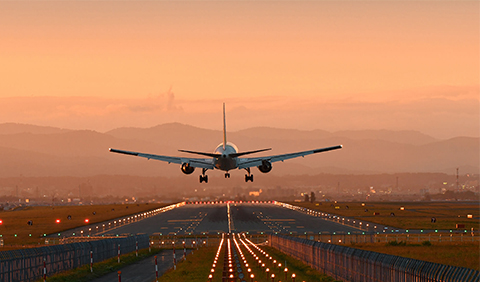

Industry Updates
Annual Air Safety Award Presented to Former NTSB Member John Goglia
ALEXANDRIA, Va. — Former U.S. National Transportation Safety Board (NTSB) member, airline maintenance professional and long-time safety advocate John Goglia is the 2020 recipient of the Laura Taber Barbour Air Safety Award. Goglia was presented the award virtually on Thursday as part of Flight Safety Foundation’s 73rd annual International Air Safety Summit (IASS).
Also during the special presentation, former Foundation President and CEO Sir Stuart Matthews was recognized with an honorary Laura Taber Barbour Air Safety Award for his significant and enduring contributions to aviation safety.
MoreFSF Virtual Safety Summit Kicks Off Monday
BRUSSELS and ALEXANDRIA, Va. ─ Flight Safety Foundation will gather aviation industry leaders from around the world next week for its 73rd annual International Air Safety Summit (IASS) to discuss safety and the urgent need for industry, regulators and public health authorities to work together to overcome the challenges posed by the pandemic. The theme for IASS 2020, which is scheduled for Oct. 19-22, is “Safety Leadership and Global Collaboration During Crisis.”
More

Medical Experts at FSF Safety Summit to Discuss Travel During Pandemic
The final day of the 73rd IASS will start at 0900 Pacific Daylight Time (1200 EDT/1600 UTC) Oct. 22 with a panel discussion on the epidemiological considerations of COVID-19 in a multimode travel ecosystem. Panelists include Dr. Lin H. Chen, president of the International Society of Travel Medicine and an associate professor at Harvard Medical School; Dr. Robert Steffen, who, among other positions, is a professor emeritus at the Epidemiology, Biostatistics and Prevention Institute at the University of Zurich; and Dr. Davidson H. Hamer, professor of Global Health and Medicine at the Boston University School of Public Health and School of Medicine.
MoreAeroSafetyWorld

U.S. FAA Rescinds Order Grounding Boeing 737 MAX
The U.S. Federal Aviation Administration (FAA) rescinded its grounding order for the Boeing 737 MAX aircraft Nov. 18 (PDF), clearing the way for the embattled narrowbody aircraft to reenter commercial service, potentially by the end of this year.
In addition to FAA Administrator Steve Dickson formally rescinding the order that grounded the aircraft, the FAA published an Airworthiness Directive (PDF) specifying design changes that must be made before the aircraft returns to service, issued a Continued Airworthiness Notification to the International Community (CANIC) and published new MAX training requirements (PDF).
MoreGAO: FAA Needs Recurrent Assessments of Safety Workforce ‘Competency Gaps’
The U.S. Federal Aviation Administration (FAA) has not regularly addressed the “competency gaps” that hinder its inspector and engineering workforces in their monitoring of the aviation industry, according to a new report by a government oversight agency.
The Government Accountability Office (GAO) said, in a report released this month, that the FAA Office of Aviation Safety (AVS) has begun identifying critical competencies – skills, knowledge, abilities and behaviors – that inspectors and engineers need to do their jobs. As an example, the report cited data analytics, systems thinking and risk-based decision making as competencies that engineers need to perform safety oversight.
More
RTCA Sees ‘Widespread’ Risks to Aviation in Plan for Shared Radio Frequency Spectrum
A move by the U.S. Federal Communications Commission (FCC) to allow 5G telecommunications systems to use the 3.7-3.98 GHz frequency spectrum presents a “major risk … of harmful interference” with radar altimeters on civil aircraft, according to new research by RTCA.1
The organization, a public-private partnership that advises the U.S. Federal Aviation Administration (FAA) and works to develop consensus on aviation modernization issues, said in a report issued early in October that if 5G telecommunications systems are permitted to use that frequency band, “the risk is widespread and has the potential for broad impacts to aviation operations in the United States, including the possibility of catastrophic failures leading to multiple fatalities, in the absence of appropriate mitigations.”
MoreICAO Secretary General: Don’t Let Pandemic Distract from Traditional Safety Focus
The aviation industry should ensure that disruptions stemming from the COVID-19 pandemic do not weaken the industry’s focus on improving aviation safety, Dr. Fang Liu, secretary general of the International Civil Aviation Organization (ICAO), said Oct. 19 during Flight Safety Foundation’s (FSF) International Air Safety Summit (IASS).
Liu delivered the keynote address to open the 73rd IASS, a virtual event that will continue through Oct. 22. She commended the FSF for its action to “sustain this important aviation event, even as we confront the challenging new normal of this pandemic.”
More